4．可和性
迄今谈到的发散级数的研究，都在于寻找渐近级数去表示函数，这些函数或者是有已知显式的，或者隐含在微分方程的解中。大概从1880年开始，数学家们研究的另一个问题，本质上是求渐近级数的反问题。给定一个在柯西意义下发散的级数，能够赋予这级数一个“和”吗？如果级数是变项级数，这个“和”就会是一个函数，对这个函数来说，这发散级数也可能是也可能不是一个渐近展开式。但是函数仍然可以取作级数的“和”，而这个“和”可以服务于某些有用的目的，即使级数肯定不收敛到这个函数，或者对于计算函数近似值来说可能用不上。
求发散级数的和的问题，在柯西引进收敛与发散的定义以前，实际上多多少少已经在做了。数学家们遇到发散级数并求出它们的和，其机会与他们对收敛级数所做的几乎一样多，因为这两类级数并没有严格区别开来。唯一的问题是，合适的和是什么？例如，欧拉的原则是（第20章第7节），一个函数的幂级数展开，以导出这个级数的函数的值作为它的和；即使对于x的某些值这级数在柯西意义下是发散的，这个原则也对这级数给定一个和。同样，在他的级数变换中（第20章第4节），他把发散级数变换成收敛级数，从不怀疑实际上每一个级数都应当有一个和。然而，在柯西确实做出了收敛与发散的区别之后，求发散级数的和的问题就在一个不同的水平上开始探讨。人们不再接受18世纪关于所有级数各有其和的相对朴素的看法。新的定义规定了现在所谓的“可和性”（summability），把它与柯西意义下的收敛性概念区别开来。
事后人们可以看到，可和性的概念事实上就是18世纪和19世纪初期的人们所提出的。这就是与刚刚所述的欧拉求和法相当的东西。事实上，欧拉在他1745年8月7日致哥德巴赫（Christian Goldbach）的信中，认定幂级数的和是导出这个级数的函数的值，还认定每个级数都必须有和，但因“和”这个词隐含通常的相加过程，而在发散级数的情形，例如1－1！＋2！－3！＋…，这个过程又不导致“和”，所以对于发散级数的“和”，我们应当用“值”这个词。
泊松也引进了一种在今天看来就是可和性的概念。欧拉把级数由之而来的函数的值作为这级数的和。隐含在欧拉这个定义中的思想是
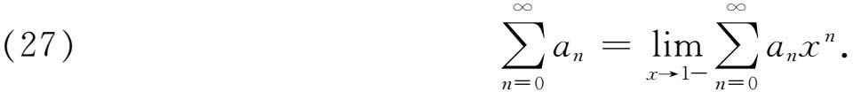
（上式中记号1－是指x从左边趋向于1。）根据（27），1－1＋1－1＋…的和是
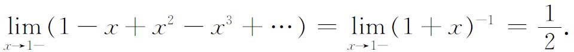
泊松(30)曾感到级数
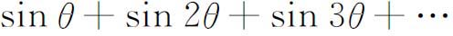
难以考虑，它除了θ是π的倍数以外处处是发散的。他的想法是，就整个傅里叶级数
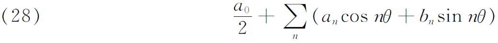
来说，人们应当考虑相关的幂级数
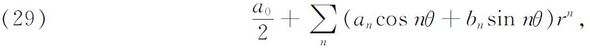
并且定义（28）的和就是级数（29）当r从左边趋向于1时的极限。自然，泊松并没有意识到他是提出了关于发散级数的和的一个定义，因为正如曾经说明过的，收敛和发散之间的区别在他那个时候还不是紧要的。
泊松所用的定义现在称为阿贝尔求和法，因为它还受到阿贝尔的一个定理(31)的启发，这个定理说，如果幂级数
有收敛半径r，并且在x＝r收敛，则
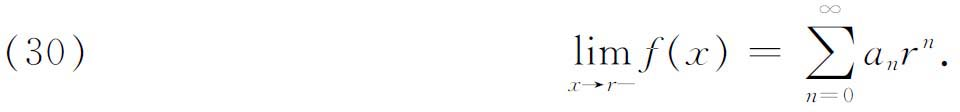
于是由级数在
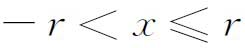
内所定义的函数f（x）在x＝r左方连续。然而，如果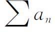
不收敛而极限（30）在r＝1存在，那就有了发散级数和的一个定义。对于在柯西意义下发散的级数，这个可和性的正式定义，直到19世纪末，由于即将说明的原因，一直没有被提出。重新考虑发散级数求和法的动力之一，除了这些级数在天文研究中继续有用之外，是解析函数论中的所谓边值（Grenzwert）问题。一个幂级数
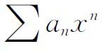
可以在以r为半径的圆的内部表示一个解析函数，但不包括圆周上的x值。问题在于能否找到一种和的概念，使得幂级数在｜x｜＝r时可以有和，并且使得这个和就是f（x）当｜x｜趋向r时的值。正是这个延拓解析函数幂级数表示范围的尝试，推动了弗罗贝尼乌斯（F．Georg Frobenius）、赫尔德（Ludwig Otto Hölder）和塞萨罗的工作。弗罗贝尼乌斯证明(32)，如果幂级数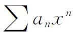
的收敛区间是－1＜x＜1，又如果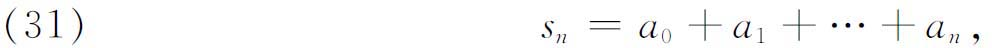
则
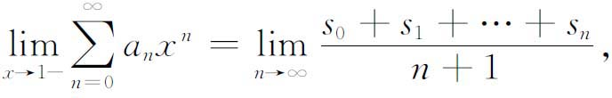
只要右边的极限存在。因此，对x＝1在正常意义下发散的幂级数可以有一个和。此外，如果f（x）是这幂级数所表示的函数，则弗罗贝尼乌斯对级数在x＝1的值的定义与
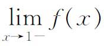
一致。脱离与幂级数的这种联系，弗罗贝尼乌斯的工作提出了发散级数的一种可和性定义。如果
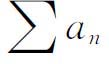
发散，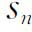
有（31）中的意义，则可以把和取作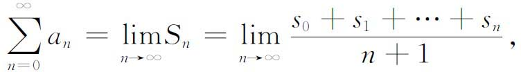
只要这个极限存在。例如，对于级数
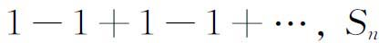
的值是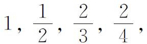
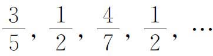
，从而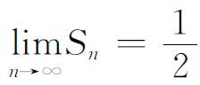
。如果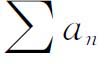
收敛，则弗罗贝尼乌斯的“和”就是通常的和。这种取级数部分和的平均的思想，可以在较早的文献中找到。丹尼尔·伯努利（Daniel Bernoulli）(33)与拉贝（Joseph L．Raabe，1801—1859）(34)对特殊类型的级数就用过。在弗罗贝尼乌斯发表他的文章之后不久，赫尔德(35)做出了一种推广。给定级数
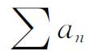
，令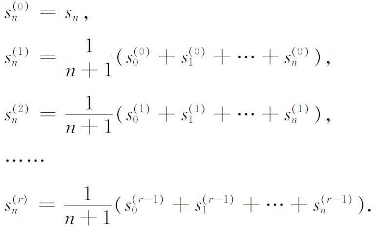
于是和为
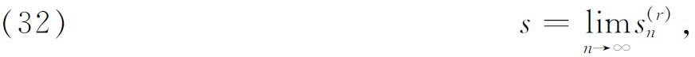
只要这极限对某个r存在。赫尔德的定义现在叫（H，r）求和法。
赫尔德给了一个例子。考虑级数
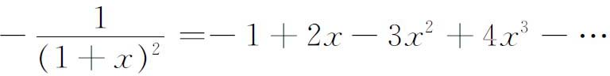
这个级数当x＝1时发散。然而对x＝1有
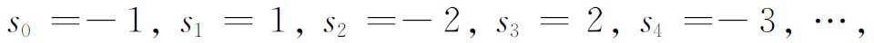
因此
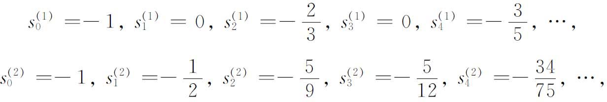
几乎显然地有
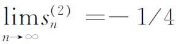
，而这就是赫尔德和（H，2）。这也是欧拉根据他的原则给予这个级数的值，他的原则是，和等于导出这个级数的函数的值。可和性的另一个在现在来说是很标准的定义，是由那不勒斯大学教授塞萨罗给出的(36)。设级数是
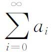
，令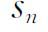
为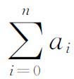
。那么塞萨罗和就是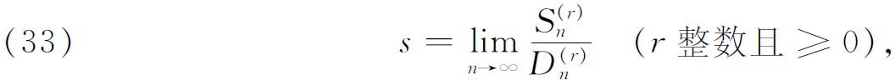
其中
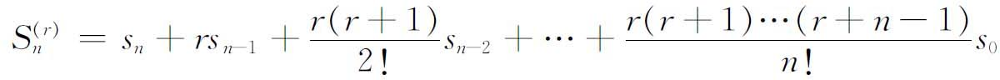
以及
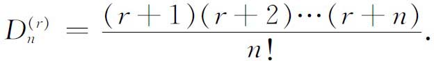
r＝1的情形包含了弗罗贝尼乌斯的定义。塞萨罗的定义现在叫做（C，r）求和法。赫尔德与塞萨罗的方法给出相同的结果。赫尔德可求和隐含塞萨罗可求和，是由克诺普（Konrad Knopp，1882—1957）在1907年的一篇没有发表的学位论文中证明的，逆定理则是由施内（Walter Schnee，1885年生）证明的(37)。
某些可和性定义的有趣特点是，当应用到收敛半径为1的幂级数时，它们不仅给出与
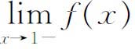
一致的和［其中f（x）是由级数给出其幂级数表示的函数］，而且还x→1－有进一步的性质，这就是他们在｜x｜＞1的区域内保持有意义，并且在这些区域内提供了原来幂级数的解析开拓。求发散级数的“和”的更进一步的动力，来自一个完全不同的方向，这就是斯蒂尔切斯对连分式的研究。连分式可以变换成发散级数或者收敛级数，反过来也成立，这一事实曾经被欧拉利用过(38)。欧拉希望（第20章第4，6节）为发散级数
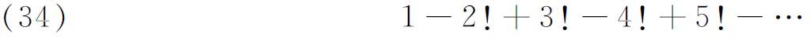
找到一个和。在他论发散级数的文章(39)以及与尼古拉·伯努利（1687—1759）的通信(40)中，欧拉首先证明级数
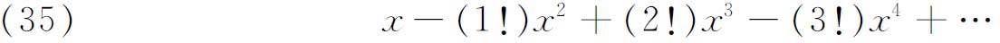
形式地满足微分方程
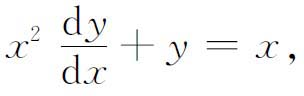
而对这方程他得到了积分解
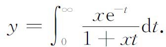
然后应用他导出的把收敛级数变换成连分式的规则，欧拉把（35）变换成
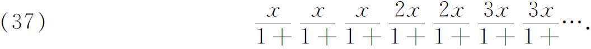
这个工作包含两个特点。一方面，欧拉得到了一个积分，可以当作发散级数（35）的“和”；后者事实上是这积分的渐近级数。另一方面他表明，如何把发散级数变换成连分式。事实上他用了x＝1的连分式去计算级数（34）的值。
这类性质的研究，在18世纪后期偶然地有一些，而在19世纪便有了很多，其中最值得注意的是拉盖尔的工作(41)。他首先证明积分（36）可以展成连分式（37）。他还处理了发散级数
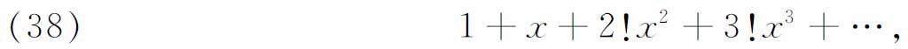
因为
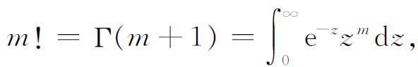
这级数可以写成
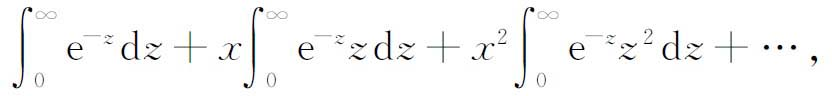
如果形式地交换积分与求和的次序，就得到
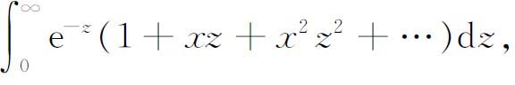
或
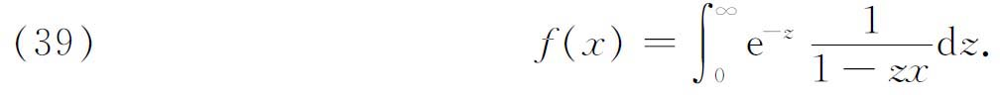
这样导出来的f（x），对所有正实数之外的复的x是解析的，并且可以当作级数（38）的和。
斯蒂尔切斯在他1886年的学位论文中着手研究发散级数(42)。在这里斯蒂尔切斯引进了一个级数渐近于一个函数的定义，完全与庞加莱引进的相同；然而在其他方面，他却只限于某些特殊级数的计算。
斯蒂尔切斯继续研究发散级数的连分式展开，在1894年至1895年写了两篇关于这个课题的著名文章(43)。这个工作是连分式解析理论的开端，它研究了收敛性问题以及定积分与发散级数的联系。就在这两篇文章中，他引进了后来以他的名字命名的积分。
斯蒂尔切斯从连分式
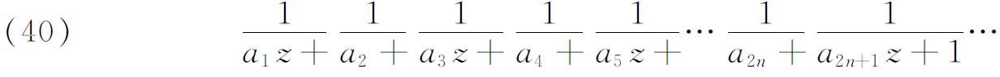
出发，其中
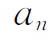
是正实数而z是复数。他接着证明，当级数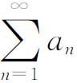
发散时，连分式（40）收敛到一个函数F（z），这函数在复平面上除去负实轴和原点以外是解析的，并且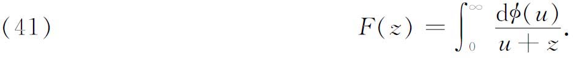
当
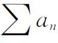
收敛时，（41）的奇部分和与偶部分和收敛到不同的极限与，这里现在，人们知道，连分式（40）能形式地展成级数
其中是正的。这种对应（在一定限制下）还是可逆的。对于每一个级数（42），都对应着一个带正的连分式（40）。斯蒂尔切斯说明了如何由；他还在发散的情况下证明了比值是递增的。如果它有一个有穷的极限λ，则级数在｜z｜＞λ时收敛；但是如果这个比递增而无极限，则级数对一切z发散。
级数（42）和连分式（40）之间的关系说得更为详细。虽然级数收敛时连分式就收敛，但反过来却不真。当级数（42）发散时，必须按照发散还是收敛而分成两种情况。在前一种情况，正如我们已经说过的，连分式给出一个而且只有一个与之等价的函数，这可以当作发散级数（42）的和。当收敛时，从连分式得到的是两个不同的函数，一个从偶部分和收敛得到，另一个从奇部分和收敛得到。但对于级数（42）（在它发散时）却有无穷多个函数与它对应，其中每一个都以这级数作为渐近展开。
斯蒂尔切斯的结果还有这样的意义：这些结果表明，发散级数至少分为两类，一类是，存在适当的单个等价函数，以这级数为它的展开，另一类则是至少存在两个等价函数以这级数作为展开。连分式只是级数与积分之间的一个中介物；也就是说，给定一个级数，通过连分式可得到积分。因此，一个发散级数总是属于一个或多个函数，这些函数可以在和的一种新的意义下当作这级数的和。
斯蒂尔切斯还提出并解决了一个反问题。为了叙述简单，我们假设可微，因而积分（41）可以写成
对应于发散级数（42）以及在发散的情形，存在一个这种形式的积分。问题就是已知道级数去找f（u）。积分的形式展开表明
因此知道了之后，必须确定f（u），使它满足无穷多个方程（43）。这就是斯蒂尔切斯所谓的“矩量问题”。它并非只有唯一解，因为斯蒂尔切斯本人就给出了函数
它使得对一切n成立。如果加上补充条件：f（u）在积分限之间是正的，则只有单独一个f（u）是可能的。
可和性级数理论的系统发展是从波莱尔自1895以来的工作开始的。他首先给出塞萨罗定义的推广。然后他仿效斯蒂尔切斯的工作，给出一个积分定义(44)。如果把拉盖尔所用的过程用到任何一个形如
的收敛半径有限（包括0）的级数上，就导致积分
其中
这个积分就是波莱尔在其上建立他的发散级数理论的表达式。它被波莱尔当作级数（44）的和。级数F（u）称为原来级数的关联级数（associated series）。
如果原来的级数（44）有大于0的收敛半径R，则关联级数代表一个整函数。这时积分当x在收敛圆内时有意义，并且积分值和级数值相等。但0是这积分也可能对收敛圆外的x值有意义，这时这积分就提供了原来级数的一个解析开拓。波莱尔称这个级数在x点（在这点积分有意义）是可和的（summable）（在刚才解释过的意义下）。
如果原级数（44）发散（R＝0），则关联级数可以收敛也可以发散。如果它只在平面u＝zx的一部分上收敛，我们就不仅把关联级数的值，也把它的解析开拓的值看成F（u）。于是积分可以有意义，并且正如我们看到的，就是0从原来的发散级数得到的。使原来的级数可和的x值的区域的确定，曾由波莱尔研究过，他考虑了原来级数收敛（R＞0）与发散（R＝0）这两种情形。
波莱尔还引进了绝对可和性（absolute summability）的概念。原来级数是绝对可和的，如果
绝对收敛，并且后续的积分
都有意义。接着波莱尔证明，绝对可和的发散级数可以完全像收敛级数那样进行运算。换句话说，这级数代表一个函数，并且可以代替函数进行运算。例如，两个绝对可和级数的和、差、积是绝对可和的，并且分别是每个级数所代表的函数的和、差、积。类似的事实对绝对可和级数的微商也成立。此外，对收敛级数来说，上述意义的和与通常的和是一致的，而减去前k项所得级数的和化为整个级数的“和”减去前k项的和。波莱尔强调指出，求和性的任何令人满意的定义必须具有这些性质，虽然不是所有的定义都这样。他不要求任何两种定义必须有相同的和。
这些性质有可能把波莱尔的理论直接应用到微分方程。事实上，如果微分方程
对x来说在原点是解析的，对y和它的微商来说是代数的，则形式上满足微分方程的任何绝对可和的级数
都定义一个解析函数作为这方程的解。例如，拉盖尔级数
形式地满足微分方程
因此函数［看（39）］
必定是这方程的解。
可和性概念一经获得一定的承认，成打的数学家就引进各式各样的新的定义，它们满足波莱尔或其他人提出的部分或全部要求。许多可和性定义被推广到多重级数。另外，各种包含可和性概念的问题被提出来了，并且有许多得到了解决。例如，假设一个级数用某种方法可和，需要对级数加上什么条件，在承认它的可和性下，还使得它在柯西意义下是收敛的？这样的定理为了纪念陶贝尔（Alfred Tauber，1866—1942？）而命名为陶贝尔型定理。例如陶贝尔证明了(45)，如果阿贝尔可和到s，并且当n趋向无穷时趋向于0，则收敛到s。
可和性的概念确实容许我们对大量的发散级数给出它们的和或值。因此怎样才算完成这个问题就不可避免地提出来了。如果一个已知的级数是直接从物理现象提出来的，和的任何定义是否合适必然完全取决于这个和在物理上是否有意义，正如任何几何的物理应用取决于这几何是否描述物理空间。柯西的和的定义是经常适合的一种，因为他基本上说的是，这和是按通常意义将愈来愈多的项接连相加而得到的。然而在逻辑上没有什么理由宁愿要和的这个概念而不要介绍过的其他概念。确实地，用级数来表示函数的范围由于应用这些较新的概念而大大地扩大了。例如施瓦茨的学生费耶（Leopold Fejér，1880—1959）说明了可和性在傅里叶级数理论中的价值。费耶在1904年证明(46)，如果在区间［－π，π］上，f（x）是有界的而且（黎曼）可积，或者是无界的但积分绝对收敛，那么在区间中每个使存在的点上，傅里叶级数
的弗罗贝尼乌斯和是。在这个定理中加在f（x）上的条件弱于以前各种定理中使傅里叶级数收敛到f（x）的条件。
费耶的基本结果成了级数可和性的一系列广泛而富有成果的研究的开始。我们在很多场合看到了用无穷级数表示函数的需要。例如在解偏微分方程的初值问题或边值问题中为了满足初始条件，通常需要把给定的初值函数f（x）用特征函数表示出来，这些特征函数是把边界条件用到从分离变量法得出的常微分方程去时得到的。这些特征函数可能是贝塞尔函数、勒让德函数，或者其他任何一类特殊函数。然而这样的特征函数级数在柯西意义下不一定收敛到已知的f（x），但这级数却又确实可能在这种或那种可和性的意义下可和到f（x），并且初始条件由此得到满足。可和性的这些应用显示了这个概念的巨大成功。
发散级数理论的形成与被接受，是数学成长的又一个显著的例子。首先它说明，当一个概念或技巧证明是有用的时候，即使它的逻辑含糊不清甚至不存在，但通过持续的研究仍将会揭出逻辑上的正确性。这纯粹是一种事后思考。它还证明，数学家对数学是人为的这一点认识到了何种程度。可和性的定义并不是愈来愈多的项连续相加的自然概念（这概念柯西只不过是把它严密化了而已），它们是人造的（artificial）。但它们为数学目的服务，其中甚至包括了用数学去解决物理问题；而这些现在成了承认它们属于合法数学的充分根据。
参考书目
Borel，Emile：Notice sur les travaux scientifiques de M．Emile Borel，2nd ed．，Gauthier-Villars，1921．
Borel，Emile：Leçons sur lessériesdivergentes，Gauthier-Villars，1901．
Burkhardt，H．：“Trigonometrische Reihe und Integrale，”Encyk．der Math．Wiss．，B．G．Teubner，1904-1916，Ⅱ，A 12，819-1354．
Burkhardt，H．：“Über den Gebrauch divergenter Reihen in der Zeit von 1750-1860，”Math．Ann．，70，1911，169-206．
Carmichael，Robert D．：“General Aspects of the Theory of Summable Series，”Amer．Math．Soc．Bull．，25，1918／1919，97-131．
Collingwood，E．F．：“Emile Borel，”Jour．Lon．Math．Soc．，34，1959，488-512．
Ford，W．B．：“A Conspectus of the Modern Theories of Divergent Series，”Amer．Math．Soc．Bull．，25，1918／1919，1-15．
Hardy，G．H．：Divergent Series，Oxford University Press，1949．看各章末的历史说明。
Hurwitz，W．A．：“A Report on Topics in the Theory of Divergent Series，”Amer．Math．Soc．Bull．，28，1922，17-36．
Knopp，K．：“Neuere Untersuchungen in der Theorie der divergenten Reihen，”Jahres．der Deut．Math．-Verein．，32，1923，43-67．
Langer，Rudolf E．：“The Asymptotic Solution of Ordinary Linear Differential Equations of the Second Order，”Amer．Math．Soc．Bull．，40，1934，545-582．
McHugh，J．A．M．：“An Historical Survey of Ordinary Linear Differential Equations with a Large Parameter and Turning Points，”Archive for History of Exact Sciences，7，1971，277-324．
Moore，C．N．：“Applications of the Theory of Summability to Developments in Orthogonal Functions，”Amer．Math．Soc．Bull．，25，1918／1919，258-276．
Plancherel，Michel：“Le Développement de la théorie des séries trigonométriques dans le dernier quart de siècle，”L'Enseignement Mathématique，24，1924／1925，19-58．
Pringsheim，A．：“Irrationalzahlen und Konvergenz unendlicher Prozesse，”Encyk．der Math．Wiss．，B．G．Teubner，1898-1904，IA3，47-146．
Reiff，R．：Geschichte der unendlichen Reihen，H．Lauppsche Buchhandlung，1889，Martin Sandig（reprint），1969．
Smail，L．L．：History and Synopsis of the Theory of Summable Infinite Processes，University of Oregon Press，1925．
Van Vleck，E．B．：“Selected Topics in the Theory of Divergent Series and Continued Frac-tions，”The Boston Colloquium of the Amer．Math．Soc．，1903，Macmillan，1905，75-187．
————————————————————
(1) Trans．Camb．Phil．Soc．，8，PartⅡ，1844，182-203，1849年出版。
(2) Comp．Rend．，17，1843，370-376＝Œuvres，（1），8，18-25．
(3) 第三版，1820，88-109＝Œuvres，7，89-110。
(4) Œuvres，7，128-131．
(5) 第三版，1820，Vol．1，Part 2，Chap．1＝Œuvres，7，89-110。
(6) Mém．de l'Acad．des Sci．，Inst．France，1，1827，Note 16＝Œuvres，（1），1，230．
(7) Trans．Camb．Phil．Soc．，9，1856，166-187＝Math．andPhys．Papers，2，329-357．
(8) Phil．Mag．，（5），23，1887，252-255＝Math．and Phys．Papers，4，303-306．
(9) Proc．Camb．Phil．Soc．，19，1918，49-55．
(10) Comp．Rend．，15，1842，554-556和573-578＝Œuvres，（1），7，149-157．
(11) Novi Comm．Acad．Sci．Petrop．，9，1762／1763，246-304，pub．1764＝Opera，（2），10，293-343．
(12) Astronom．Nach．，28，1849，65-94＝Werke，7，145-174．
(13) Jour．de Math．，2，1837，16-35．
(14) Trans．Camb．Phil．Soc．，6，1837，457-462＝Math．Papers，225-230．
(15) Zeit．für Physik，38，1926，518-529．
(16) Zeit．für Physik，39，1926，828-840．
(17) Comp．Rend．，183，1926，24-26．
(18) Proc．LondonMath．Soc．，（2），23，1923，428-436．
(19) Trans．Camb．Phil．Soc．，9，1856，166-187＝Math．and Phys．Papers，2，329-357．
(20) Trans．Camb．Phil．Soc．，10，1857，106-128＝Math．and Phys．Papers，4，77-109．
(21) Acta Math．，8，1886，295-344＝Œuvres，1，290-332．
(22) Vol．2，Chap．8，1893．
(23) Acta Math．，24，1901，289-308．
(24) Math．Ann．，50，1898，525-526．
(25) Amer．Math．Soc．Trans．，10，1909，436-470＝Coll．Math．Papers，1，201-235．
(26) Amer．Math．Soc．Trans．，9，1908，219-231和380-382＝Coll．Math．Papers，1，1-36。
(27) Proc．Roy．Soc．，A 86，1912，207-226＝Sci．Papers，6，71-90．
(28) Annalen der Phys．，（4），47，1915，709-736．
(29) Proc．London Math．Soc．，（2），23，1922-1924，428-436．
(30) Jour．de l'Ecole Poly．，11，1820，417-489．
(31) Jour．für Math．，1，1826，311-339＝Œuvres，1，219-250．
(32) Jour．für Math．，89，1880，262-264＝Ges．Abh．，2，8-10．
(33) Comm．Acad．Sci．Petrop．，16，1771，71-90．
(34) Jour．für Math．，15，1836，355-364．
(35) Math．Ann．，20，1882，535-549．
(36) Bull．des Sci．Math．，（2），14，1890，114-120．
(37) Math．Ann．，67，1909，110-125．
(38) Novi Comm．Acad．Sci．Petrop．，5，1754／1755，205-237，pub．1760＝Opera，（1），14，585-617，和Nova Acta Acad．Sci．Petrop．，2，1784，36-45，pub．1788＝Opera，（1），16，34-43。
(39) Novi Comm．Acad．Sci．Petrop．，5，1754／1755，205-237，pub．1760＝Opera，（1），14，585-617．
(40) 欧拉的Opera Posthuma，1，545-549。
(41) Bull．Soc．Math．de France，7，1879，72-81＝Œuvres，1，428-437．
(42) “Recherches sur quelques séries semi-convergentes，”Ann．de l'Ecole Norm．Sup．，（3），3，1886，201-258＝Œuvres complètes，2，2-58．
(43) Ann．Fac．Sci．deToulouse，8，1894，J．1-122，和9，1895，A．1-47＝Œuvres complètes，2，402-559．
(44) Ann．de l'Ecole Norm．Sup．，（3），16，1899，9-136．
(45) Monatshefte für Mathematik und Physik，8，1897，273-277．
(46) Math．Ann．，58，1904，51-69．